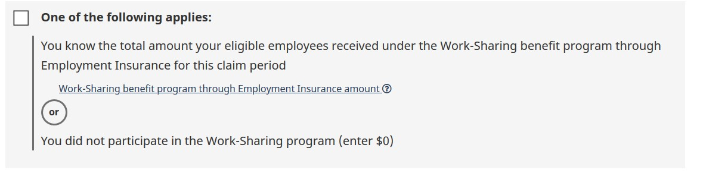
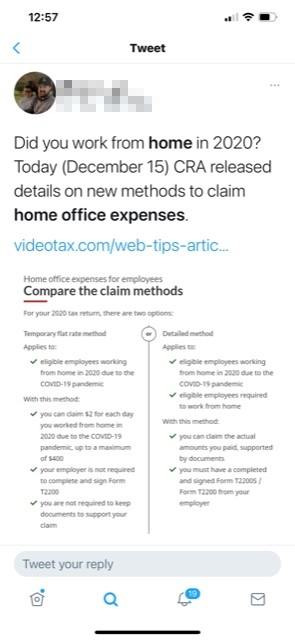

Lors d'une série de tests UX pour la Subvention salariale d'urgence du Canada (SSUC), la liste de contrôle a été réalisée pour préparer les utilisateurs avant de commencer leur calcul. Les tests ont montré qu'il y avait quelques problèmes lors de l'empilement de critères facultatifs.
Lorsque deux options possibles étaient affichées, séparées par le mot « ou », certains utilisateurs manquaient la deuxième option et supposaient que la première option était le seul critère.
Comme le montre l'image ci-dessus, le point inférieur de l'option « ou » était parfois omis. Ce problème a été atténué en stylisant le mot « ou » avec un design plus visuel.
Cette conception est actuellement utilisée dans le Frais de télétravail pour les employés domaine de l'ARC. Il a été utile de mieux définir les différences entre deux options plutôt que de simplement utiliser une grille ou d'empiler les options les unes sur les autres et d'espérer que l'utilisateur saisisse l'expression « et » ou « ou ».
Un événement inattendu a été son utilisation comme support visuel, à l'instar d'une infographie dans un tweet lors du lancement des frais de bureau à domicile. Cela offre l'avantage d'utiliser le format HTML plutôt que de fournir une infographie plus agréable visuellement.
Les nouvelles versions des lecteurs d'écran (comme NVDA et JAWS) lisent désormais la valeur content: "" du CSS. Cela permet à l'utilisateur d'entendre la conjonction sans qu'elle soit codée de manière invisible.
La poussée vers l'utilisation par défaut de <ul> avec la récente mise à jour permet également aux utilisateurs d'entendre combien d'« options/parties » ou de « choix » du et/ou, ce qui leur donne une connaissance des quantités d'options/choix à l'avance.
Note: il est toujours important d'écrire l'instruction/l'en-tête de manière à indiquer que le composant de conjonction suivant est un choix/une option (ou une partie si vous utilisez l'option « et »), pour les rares situations où un utilisateur peut avoir le CSS désactivé (et ne peut pas voir le composant et/ou).